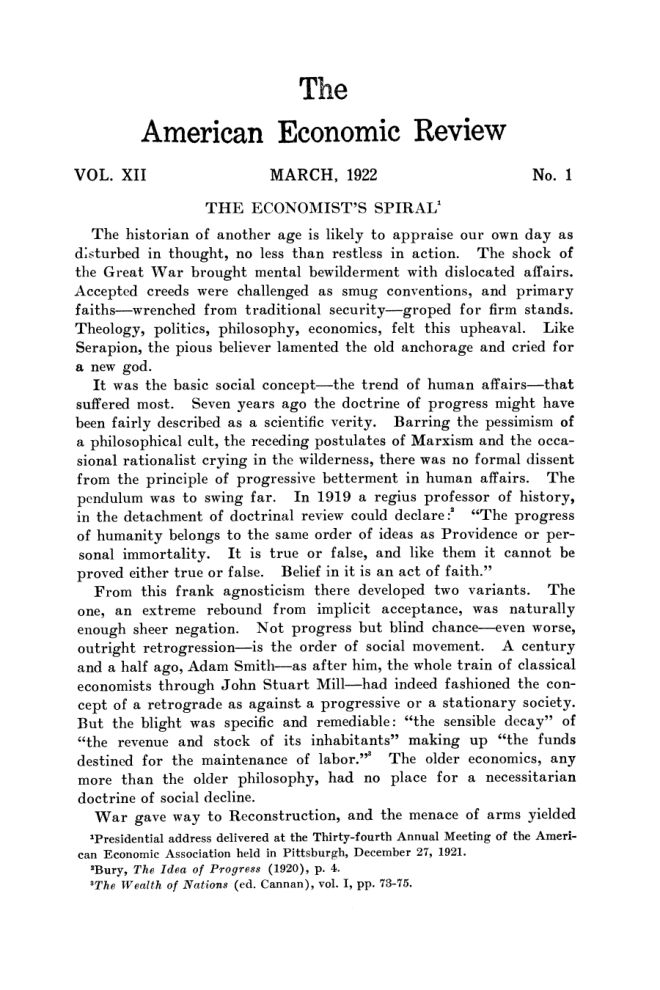

Hollander e o economista que não foi ouvido na guerra
Leitura: 8 min
No discurso presidencial de 1921, Jacob H. Hollander compara os economistas das guerras napoleônicas e da Grande Guerra e prevê, para depois do conflito, prestígio e um risco: o formalismo.


Em 27 de dezembro de 1921, na 34ª reunião anual da American Economic Association, em Pittsburgh, Jacob H. Hollander, da Johns Hopkins University, leu um discurso presidencial com uma afirmação que, segundo ele, não fora concebida às pressas nem formulada sem cuidado: de toda a companhia dos economistas americanos, nenhum fora escolhido ou autorizado a exercer influência formativa e determinante na condução econômica da guerra.
O texto, que abre a American Economic Review de março de 1922, organiza a constatação numa imagem. Depois do choque da guerra, observa Hollander, a doutrina do progresso, que sete anos antes passava por verdade científica, fora posta em dúvida. Da dúvida nasceram duas variantes: a negação pura, para a qual o movimento social seria acaso ou retrocesso, e a ideia de retorno cíclico, em que os assuntos humanos seguem uma espiral. Na versão horizontal, a espiral traz o homem de volta ao ponto de partida; na vertical, cada etapa de uma subida corresponde, em certos aspectos, a uma etapa já percorrida.
Os paralelos entre os fatos econômicos das guerras napoleônicas e da Grande Guerra, como desordens monetárias, flutuação de preços, conflitos trabalhistas e depressão comercial, já tinham sido explorados em parte. Hollander quer examinar outro paralelo: o das ideias econômicas e do papel de quem as produz.
Como foi a primeira volta da espiral?
Na Grã-Bretanha do fim do século XVIII, diz Hollander, o economista político não teve papel influente nem distinto. A influência de Adam Smith sobre Pitt, antes dada como certa, vinha sendo relativizada por estudos recentes, e com a guerra a filosofia econômica cedeu ao oportunismo. Dugald Stewart, em Edimburgo, preservou o conceito de ciência econômica e formou o grupo que escreveria nas décadas seguintes, mas sem influência prática. Antes de 1800, conclui, procura-se em vão outra influência relevante da opinião econômica sobre a política.
A virada veio na segunda metade da guerra. A Restrição bancária de 1798 e a desordem dos câmbios produziram uma enxurrada de panfletos que culminou no Bullion Report e nos textos de Ricardo; o preço do trigo, o imposto de renda de 1799, Malthus e o fundo de amortização alimentaram outras controvérsias. Essa literatura, observa, era obra de panfletários, sem continuidade. O que a salvou foi o crescimento de uma consciência científica, ligado a Stewart e à Edinburgh Review, e a moda do estudo da economia política, que chegou dos legisladores às governantas.
Nos cinco anos depois de Waterloo, afirma, a economia política teve influência prática nunca antes igualada. Vieram também o reconhecimento acadêmico, com a nomeação de Malthus em Haileybury em 1807 e o curso de Pryme em Cambridge em 1816, e o Political Economy Club, organizado em 1821. Depois, a queda: a investigação deu lugar ao dogmatismo, a análise à disputa, e a doutrina degenerou, diz Hollander, em dialética estéril e até em defesa de classe.
O que aconteceu com os economistas americanos na guerra?
A segunda volta começa com uma profissão muito mais forte. Em 1917, segundo Hollander, a economia nos Estados Unidos podia se comparar a qualquer ciência irmã em clareza de objetivo e alcance de influência; tinha associação científica, revistas técnicas e lugar em órgãos como o Census Office, a Tariff Commission e a Federal Trade Commission. Havia vitórias concretas, como a indenização por acidente de trabalho, o imposto de renda e o Federal Reserve. Mas, ao contrário do que ocorreu nas ciências físicas, não houve mobilização dos economistas. Muitos aceitaram cargos subordinados, às vezes burocráticos, e as decisões ficaram com homens de negócios convertidos em administradores e com técnicos chamados de estatísticos.
O autor examina então quatro áreas de intervenção. No trabalho, vê a adaptação oportunista de um mecanismo de paz a uma necessidade de guerra; a ideia de uma política comum para todas as indústrias de guerra só surgiu com o conflito pela metade. Na fixação de preços, um afastamento radical da opinião econômica aceita, decidido sem consulta aos especialistas; não afirma que outros meios teriam funcionado melhor, apenas que o veredicto deve esperar uma investigação mais completa. Na receita, o país começou bem, com uma proporção alta de impostos em relação a empréstimos, mas logo trocou a estrada da tributação e da consolidação da dívida pelo financiamento por crédito bancário.
O instrumento dessa troca, segundo Hollander, foi o certificado de endividamento. Nas sete semanas entre a lei de receita de 3 de março e a lei do Primeiro Empréstimo da Liberdade, de 24 de abril de 1917, ele deixou de ser um título de curto prazo emitido à espera de um empréstimo consolidado e passou a ser um meio habitual de ampliar o crédito bancário. Na administração bancária, o Tesouro sustentou a política de tomar emprestado barato com taxas preferenciais de redesconto nos bancos de reserva federal. Daí, diz, vieram inflação, alta do custo de vida, ganhos excessivos e especulação, e a prática continuou depois do armistício.
“O economista como cientista alerta foi submerso no economista como cidadão dócil.” (“the economist as alert scientist was submerged in the economist as docile citizen”)
Hollander não acusa os colegas de covardia intelectual. Atribui a reserva ao assentimento que, em momentos de grande perigo nacional, é o instinto da democracia. Depois do armistício, prossegue, a profissão recuperou o equilíbrio: mostrou que o país financiara a guerra e o pós-guerra em grande parte com crédito bancário, criticou o atraso do Federal Reserve em subir os juros e insistiu em que os ideais de justiça fiscal, e não a conveniência do momento, deveriam definir o sistema de receitas. Para ele, quem adota uma prática teoricamente frágil e a defende como necessidade prática transforma a questão num cálculo em que a opinião oficial vale tanto quanto qualquer outra opinião competente, e não mais.
Onde termina a espiral?
A previsão final segue o paralelo. Os erros da política de guerra começavam a aparecer, e com eles, espera Hollander, viriam maior interesse pelo estudo da economia e maior reputação para o economista, como na década posterior a Waterloo. Então, diz, o público percebeu que preços altos, câmbio em queda, crise agrícola, desemprego e impostos pesados resultavam de políticas, e que um grupo de estudiosos vinha advertindo sobre isso.
Pouco influente na política, intransigente como crítico, confirmado pelos fatos, prestes a ser aclamado como guia: nesse ponto, resume Hollander, a espiral se mantém. Resta a última fase, a recaída no formalismo. Se o economista, inebriado pelo novo lugar, renunciar ao seu direito de nascença, seguirão rigidez artificial, frases paradoxais, previsões categóricas, apego à vindicação da doutrina e surdez a novas evidências.
“a espiral se mantém” (“the spiral holds”)
A alternativa, nas palavras finais do discurso, é manter a estatura científica: reunir dados com paciência, formular hipóteses com cautela, abster-se da teoria de gabinete e submeter as regularidades provisórias a verificação rigorosa. Assim, conclui, o economista conservará a posição científica e, só pela força do seu saber, terá peso nos negócios públicos.
Na minha leitura
Na minha leitura, o interesse do discurso está no método. Hollander trata a história do pensamento econômico como evidência sobre o próprio ofício: a comparação entre 1815 e 1919 não prova que exista uma espiral, e ele não pretende isso; serve para organizar uma pergunta sobre quando o conhecimento técnico chega às decisões e o que acontece com ele depois que chega.
O núcleo econômico é o diagnóstico do financiamento de guerra. A distinção entre tributar e consolidar a dívida, de um lado, e financiar o Tesouro com crédito bancário a juros administrados, de outro, é a mesma que ainda separa o déficit coberto pela poupança do déficit coberto pela expansão monetária. E a advertência final, contra a rigidez de quem ganhou prestígio, funciona como regra de conduta para qualquer especialista que passe a ser ouvido.
Glossário
- Bullion Report
- relatório de um comitê do Parlamento britânico sobre o preço do ouro e os câmbios durante a Restrição, rejeitado pela Câmara dos Comuns em 1811.
- Restrição bancária
- suspensão, a partir de 1798, da conversibilidade em ouro das notas do Banco da Inglaterra, segundo a data usada por Hollander.
- Certificado de endividamento
- título de curto prazo do Tesouro americano; na guerra, passou a ser comprado pelos bancos com crédito criado por eles.
- Taxa preferencial de redesconto
- juro mais baixo cobrado pelos bancos de reserva federal em empréstimos garantidos por títulos do governo.
- Consolidação da dívida
- troca de dívida de curto prazo por títulos de longo prazo vendidos a investidores.
Fontes
- The Economist's Spiral — Jacob H. Hollander (Johns Hopkins University) (pp. 1–20). JSTOR · Internet Archive (PDF)
- Edição completa, com os demais artigos: Nº 174 do Arquivo.
Documento em domínio público (EUA, publicado antes de 1931), via JSTOR Early Journal Content e Internet Archive. Resumo e comentário do autor deste site, sem afiliação com a American Economic Association. Encontrou um erro? Escreva: a correção é publicada no próprio texto, com data.
↑ Nº 174 · Hollander, a espiral do economista e a lei tributária de 1921 Blakey e a lei tributária que saiu parecida com a anterior →